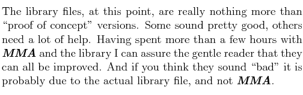

This document is provided as a supplement to the MMA Reference Manual. The manual is a fairly stable document which you probably don't want to reprint with every minor update to MMA; however, the standard library is a rapidly evolving set of files--a current reference to this is quite essential.
The following list of predefined grooves has been generated from the library files included in the standard distribution. Each section, below, uses the filename as a header and then lists the various defined grooves.
You should be able to use any of these grooves in your files without using other directives. However, if you have files in non-standard locations you may need to properly set the library path in a MmaRC file with the SetLibPath directive or by explicitly loading the library file(s) with a Use directive.
The filenames are, mostly, in all lowercase. These are the actual filenames used in the library. If you are loading files with the Use directive you must use the same case.
Following the groove description is a boxed number in the form (4). This indicates the sequence size of the groove. Next, is a list of tracks and instrument names. This shows the first voice or drum note defined for each track--it is quite possible that the track uses other voices. This data is included so that you can see what tracks are active.
The data has been extracted from the library files using the -Dx MMA command line option. This option directly generates LATEX source which generates this document. The following information is extracted from each library file:
|  |